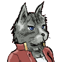
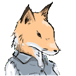

| 登場キャラクター（一部） |
|
【シェパード】 ♂・中年間近
2人しかいないピースタウンの
警察官のうちの一人。
娘が病気で、高い入院費を
支払うためにいつも
貧しい生活をしている。
マジメで優秀だがときどき
ヌケてるときがある。 |
|
【ゲーター】 ♂・ちょっと中年
昔、シェパードに逮捕された
マフィアのドンで、
現在は刑期を終えて
ピースタウンに戻ってきている。
シェパードへの復讐を誓っている。
でも憎めない性格。 |
|
【ブル】 ♂・そろそろお年寄り
ピースタウン警察署の署長で、
部下はシェパードただ一人。
とても面倒くさがり屋なので
仕事はいつもシェパードに
押し付けたいと思っている。
でも根はいい人。 |
|  |
【キャット】 ♀・働き盛りのお年
ピースタウンの自動車修理工で
シェパードの知り合い。
シェパード同様、彼女も
家計が火の車らしい。
第一話で何かと協力してくれる。 |
|  |
【フォックス】 ♀・とても若い
病気の弟のために
必死でお仕事するお姉さん。
警察署にときどき配達に
行っていたことがきっかけで、
第二話にてシェパードと知り合う。
美人な娘さん（※シェパード談）。 |